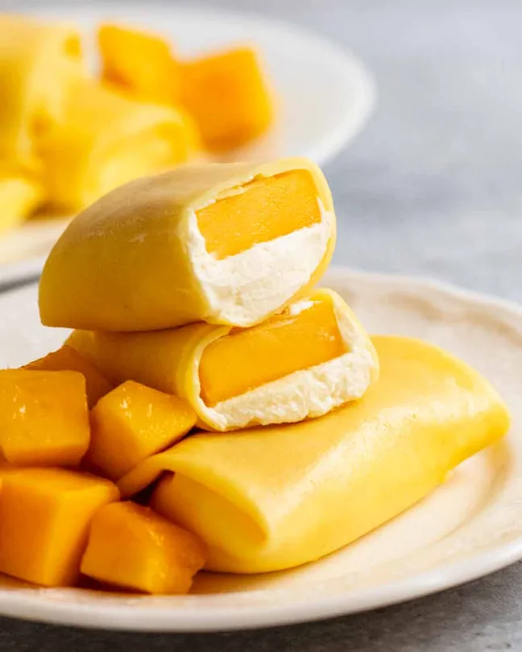

Mango Pancake

Description :
Mango pancakes are thin yellow crepes rolled up like a spring roll with whipped cream and a big juicy piece of mango stuffed inside. They are a highlight for many at yum cha here in Australia (that’s dim-sum in the US), with both kids and grown ups deeming them to be the perfect ending to a lunch of too many steamed dumplings. But actually, they are quite a light dessert being that it’s mostly mango with some lightly sweetened whipped cream and the pancake is very thin. Listen to me, trying to justify my indulgence!!
Ingredients :
- Flour
- Icing sugar
- Cornflour / Cornstarch
- Eggs
- Milk
- Yellow food colouring
- Cream
- Icing sugar / powdered sugar
- Vanilla
- Mangoes
Steps :
- Batter – Pour the milk into a bowl then sift the dry ingredients in (flour, cornflour, icing sugar). Whisk until lump free, then whisk in the eggs and food colouring. The batter will be very, very thin.
- Refrigerate for 1 hour. Don’t skip or shortcut this step as during this resting time, the flour absorbs liquid which makes the crepe softer so you can roll the crepes without cracking. Also, the batter thickens slightly to the right consistency for cooking.
- Measure out 45 ml / 3 tablespoons of batter. I use beakers – super handy! (I have stacks of them for recipe testing and filming purposes).
- Spray a non stick pan lightly with oil then heat over a medium low stove. Size matters! I use a pan that has a 18cm/7″ flat base and rim-to-rim of 24cm/10″. Makes the perfect size mango pancakes! The brand I use is Tefal 24cm fry pan, sold at Coles/Woolworths in Australia. If your pan is bigger or smaller, just adjust the crepe batter quantity as necessary. If using a standard crepe pan, you will need 60ml / 1/4 cup of batter. You’ll also need to adjust the size of your mango pieces.
- Pour the batter into the middle – it should sizzle very lightly
- Swirl – Immediately swirl to cover the base in a thin layer of the batter.
- Set to touch – Cook for 45 seconds to 1 minute or until the middle is set to touch. Do not flip in the pan. We only cook one side of the crepes. The top side that is not in contact with the pan will be the presentation side of the mango pancake (smooth and untarnished!).
- Loosen – About halfway through cooking, start loosening the edges with a rubber spatula to ensure it flips out easily. Don’t be shy about getting under those edges!
- Flip the crepe out onto a work surface. Flip quickly, and with confidence! Don’t worry if your crepes fold or wrinkle when they land. Just leave them while hot as they are quite delicate. They become less fragile as they cool, then you can straighten them out.
- Repeat to cook remaining crepes. You should get 10 to 12 in total. You can flip them out on top of each other, they will not stick because of the oil.
- Fully cool before filling (about 30 minutes) else the cream will melt.
- Filling – Place crepe on a work surface. Place a dollop of cream just below halfway. Spread the cream so it’s about 1cm/1/3″ thick, a smidge larger than the shape of the mango piece. Top with mango.
- Fold the bottom up to cover the mango.
- Fold the sides in.
- Continue rolling, firmly but gently.
- Finish with the seam side down.
- And that’s it, you’re done. YOU JUST MADE MANGO PANCAKES, you cooking goddess! (Or god)
Source
Home